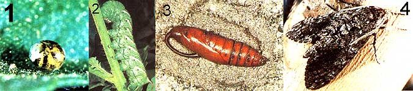

Here's the sixth of a series of articles that will help you tell friend from foe in your garden.
Of all the pests that ravage tomato plants, the hornworm is perhaps the most destructive and widespread. This green caterpillar (named for the lethal-looking horn that protrudes from the tip of its abdomen) can grow to a whopping four inches in length, and that's a lot of "worm" to feed!
There are two species of this caterpillar that attack tomato plants: the tomato hornworm ( Manduca quinquemaculata ) and the tobacco hornworm ( M. sexta ). The former sports V- or L-shaped lines on its sides and a green and black horn, while the latter exhibits straight stripes and a red horn. However, aside from their markings, the two species are so similar that their common names are often used interchangeably. And both are found throughout the U.S. (and sometimes even on the same plant!), although the tobacco hornworm predominates in the South and the tomato type is more common in the North.
Hornworms don't specialize only in tomato and tobacco mutilation: They're also very fond of peppers, eggplants, potatoes, and other solanaceous plants. Typical Manduca damage includes leaves chewed down to the stem, and fruit (green and ripe) that has been gouged. Unfortunately, despite their size and seemingly conspicuous markings, hornworms are remarkably well camouflaged and often escape the eye of even an experienced gardener.
LIFE CYCLE
The hornworm begins life as a small yellow egg, which is deposited on a host plant. Within a few days a tiny caterpillar - already equipped with a horn that's almost as long as its body - emerges. In about two weeks, this miniworm swells to a gigantic size, all the while feeding on the host plant.
Once fully grown, the caterpillar burrows a few inches beneath the ground, and constructs an earthen cell in which to pupate. In its pupal stage, the hornworm is about two inches long, is dark brown in color, and has a curious "pitcher handle" extending from its head (this appendage encloses the long proboscis which will later be used by the adult moth to forage nectar from flowers). After the metamorphosis is complete, a large gray moth will emerge from the ground and find a suitable place to perch while its new wings expand and dry. The fuzzy adult belongs to the family of sphinx moths (so named because their caterpillars, when alarmed, raise their heads in such a way that they resemble an Egyptian sphinx).
CONTROLLING HORNWORMS IN YOUR GARDEN
Nature offers several effective controls against hornworms. For example, the small trichogramma wasp sometimes parasitizes hornworm eggs and thus prevents their hatching. Another wasp, the braconid, injects its eggs into a hornworm, and - upon emerging - the wasp larvae feed on the host caterpillar until they've eaten their way out of its body; they then pupate in silken cocoons on the stricken hornworm's back. So if you should find any hornworms with numerous white cocoons attached to them or any hornworm eggs that are abnormally dark, leave them alone, as the pests will never pupate, and their natural parasites will continue to breed in the area. In addition to wasps, many birds and lizards are effective hornworm exterminators, as they enjoy feeding on the juicy caterpillars.
Hornworms can also be gotten rid of in other ways. If your tomato patch isn't too large (and you're not squeamish), the best thing to do is simply to handpick the varmints off your plants, and either squash them or cut them in half with a pair of scissors. Early in the season, it might also be practical to crush the small, yellow hornworm eggs, which can be found on the undersides of leaves.
If your patch is too large for these methods, other options are available. About the best of these is Bacillus thuringiensis (a naturally occurring bacterium that attacks the digestive systems of numerous leaf-feeders, including hornworms), which is available in spray or powder form under the trade names of Dipel and Thuricide.
Sure, plucking large, green worms off plants is an unpleasant task, and bacterial sprays can be expensive . . . but when you consider all those lush, ripe tomatoes you're going to save, either would seem to be a small price to pay for controlling your garden's population of hornworms!
|
 [1]Hornworms can first be detected in the form of small yellow eggs deposited on host plants. This particular egg displays a dark coloration indicating that it has been parasitized and would therefore pose no threat to your garden later. [2] From a healthy egg, a hornworm develops into a large cat erpillar, and it's during this stage that the varmints do the most damage to tomato bushes and other solanaceous plants! [3] When fully grown, the caterpillar will burrow down into the ground to pupate . . . [4] and finally, it'll emerge as the harmless fuzzy sphinx moth so often seen fluttering at porch lights on summer evenings. |
|
|